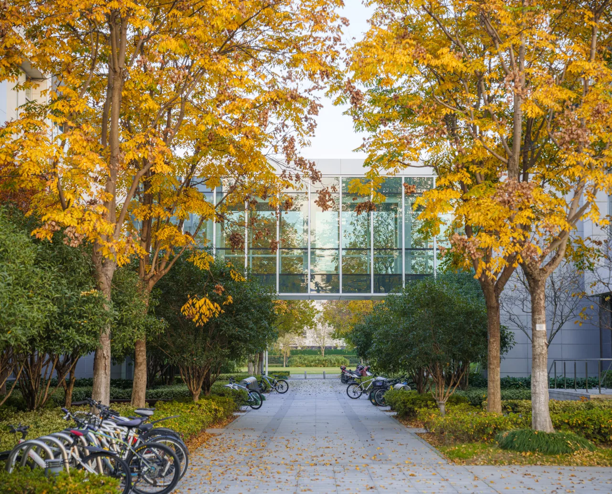

Lab Events & Activities
ARK Lab regularly organizes and hosts academic workshops, research seminars, and collaborative events that bring together leading researchers, industry partners, and students in the fields of human-computer interaction, aging technology, and intelligent systems. Discover our latest events and join us in advancing the frontiers of accessible and inclusive technology.

Workshop on Designing Age-Friendly Intelligent Agents for Senior People
Date: 2027.06.01 | Venue: HKUST(GZ), Guangzhou, C2-102
A full-day workshop focusing on designing age-friendly intelligent agents for senior people, bringing together researchers, students, and industry partners.

Workshop on Intelligent Gerontechnology for Accessible Living
Date: 2026.06.01 | Venue: HKUST, Hong Kong
A workshop focusing on intelligent gerontechnology and assisted mobility for accessible senior living, connecting experts in aging sciences, technology, and industry.